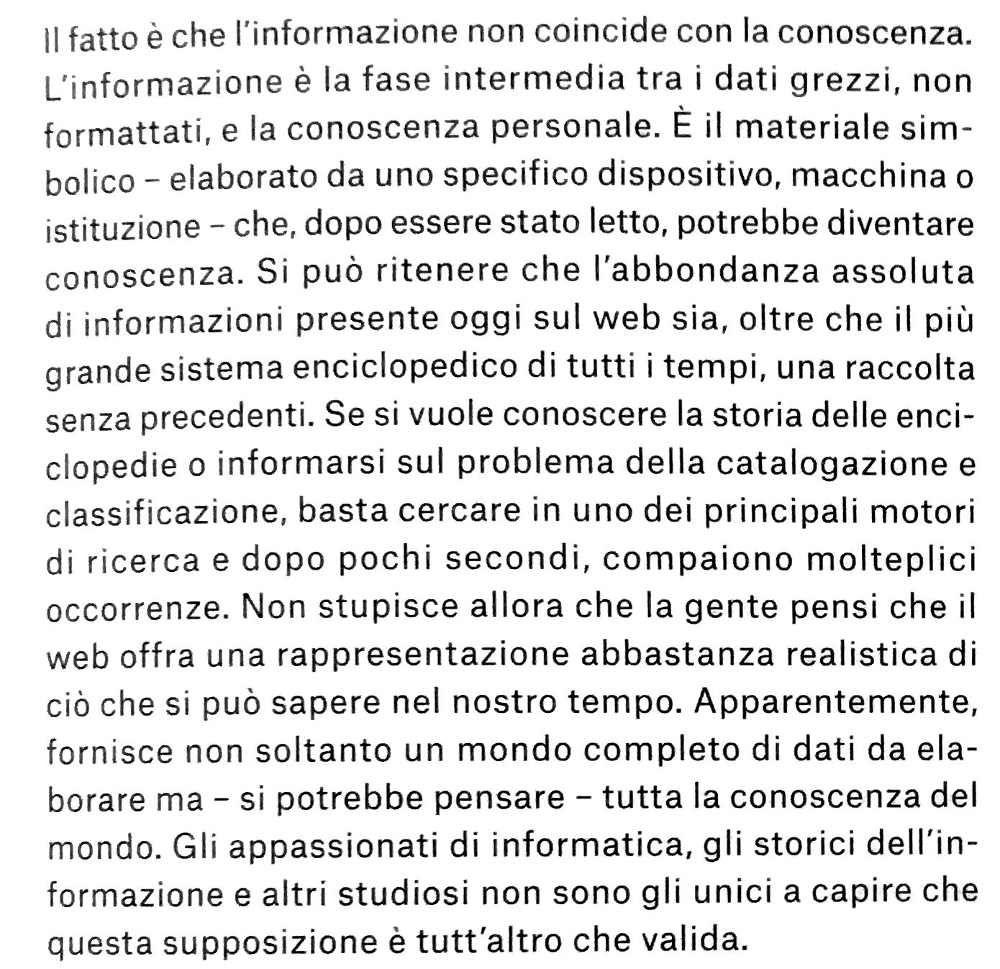
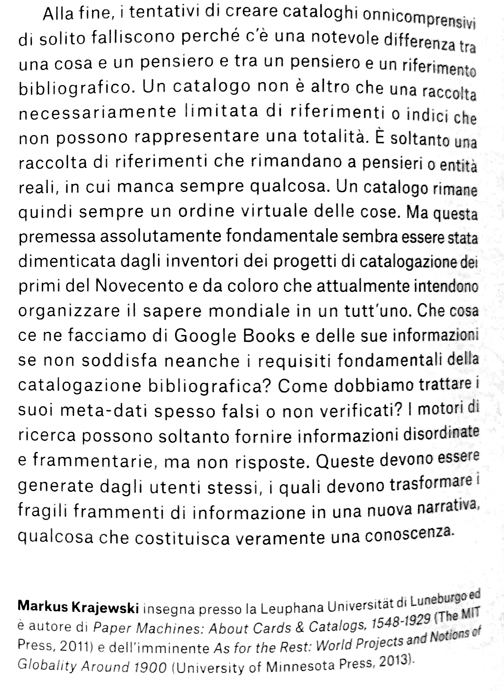

Catalogo Biennale Arte di Venezia 2013, Palazzo enciclopedico, Il sogno del cervello mondiale- Markus Krajewski
M. Gioni, Il Palazzo Enciclopedico
Momentary Monuments
W. Benjamin
Thinking Head
Codex Seraphinianus
Interconnessione globale, "Atmosfera"